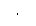

Instrument State Storage
The function generator has five storage locations in non-volatile memory to store instrument states. The locations are numbered 0 through 4. The function generator automatically uses location "0" to hold the state of the instrument at power down. You can also assign a user-defined name to each of the locations (1 through 4) for use from the front panel.
· You can store the instrument state in any of the five storage locations. However, you can only recall a state from a location that contains a previously-stored state.
· From the remote interface only, you can use storage location "0" to store a fifth instrument state (you cannot store to this location from the front panel). However, note that location "0" is automatically overwritten when power is cycled (the instrument state previously stored will be overwritten).
· The state storage feature "remembers" the selected function (including arbitrary waveforms), frequency, amplitude, dc offset, duty cycle, symmetry, as well as any modulation parameters in use.
· When shipped from the factory, storage locations "1" through "4" are empty (location "0" contains the power-down state).
· When power is turned off, the function generator automatically stores its state in storage location "0". You can configure the function generator to automatically recall the power-down state when power is restored. However, when shipped from the factory, the function generator is configured to automatically recall the factory default state at power-on.
· You can assign a custom name to each of the storage locations (however, you cannot name location "0" from the front panel).
You can name a location from the front panel or over the remote interface, but you can only recall a state by name from the front panel. From the remote interface, you can only recall a stored state using a number (0 through 4).
· The name can contain up to 12 characters. The first character must be a letter (A-Z), but the remaining characters can be letters, numbers (0-9), or the underscore character (" _ "). Blank spaces are not allowed. An error will be generated if you specify a name with more than 12 characters.
· The function generator will not prevent you from assigning the same custom name to different storage locations. For example, you can assign the same name to locations "1" and "2".
· If you delete an arbitrary waveform from non-volatile memory after storing the instrument state, the waveform data is lost and the function generator will not output the waveform when the state is recalled. The built-in "exponential rise" waveform is output in place of the deleted waveform.
· The front-panel display state (
see "Display Control" on page 115) is saved when you store the instrument state. When you recall the state, the front-panel display will return to the previous state.
· An instrument reset does not affect the configurations stored in memory. Once a state is stored, it remains until it is overwritten or specifically deleted.
· Front-Panel Operation: Pressand then select the Store State or Recall State softkey. To delete a stored state, select the Delete State softkey (also removes the custom name for this memory location).
To configure the function generator to recall the factory default state at power-on, pressand then select the Pwr-On Default softkey. To configure the function generator to recall the power-down state when power is restored, pressand select the Pwr-On Last softkey.
You can assign a custom name to each of the four storage locations.
· The custom name can contain up to 12 characters. The first character must be a letter but the remaining characters can be letters, numbers, or the underscore character (" _ ").
· To add additional characters, press the right-arrow key until the cursor is to the right of the existing name and then turn the knob.
· To delete all characters to the right of the cursor, press thekey.
· Remote Interface Operation:
*SAV {0|1|2|3|4} State 0 is the instrument state at power down.
*RCL {0|1|2|3|4} States 1, 2, 3, and 4 are user-defined states.
To assign a custom name to a stored state to be recalled from the front panel, send the following command. From the remote interface, you can only recall a stored state using a number (0 through 4).
MEM:STATE:NAME 1,TEST_WFORM_1
To configure the function generator to automatically recall the power-down state when power is restored, send the following command.
MEMory:STATe:RECall:AUTO ON